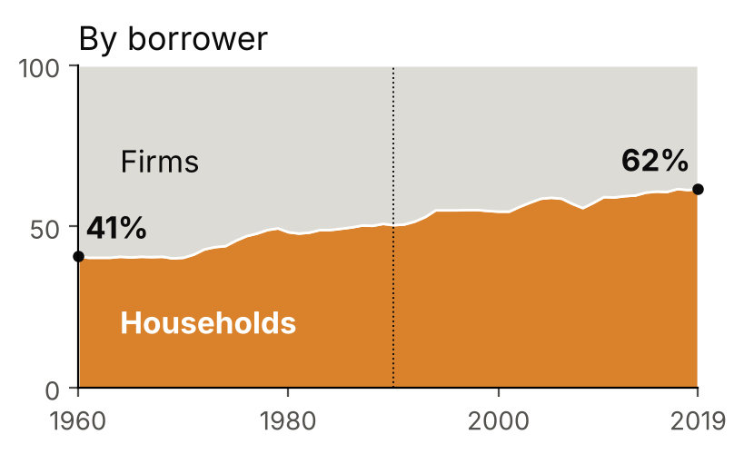
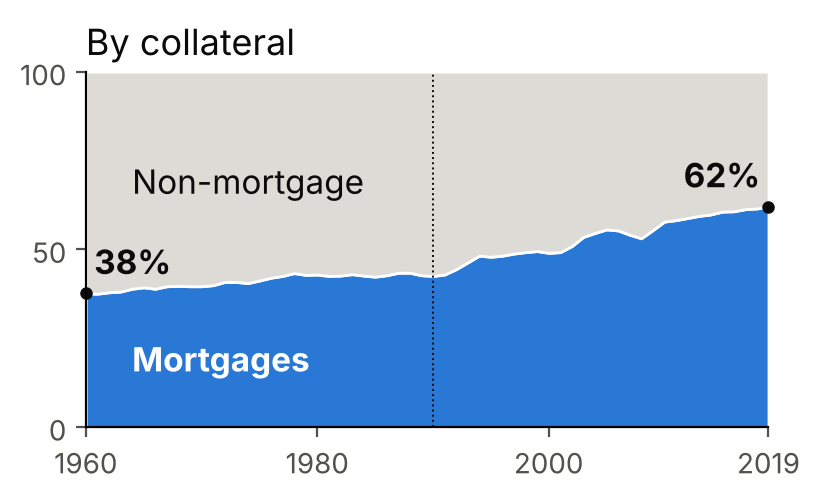

Mortgage lending, bank capital and the size distribution of firms
Economic History, Sciences Po
2026-10-11


Average of 11 countries, 1960–2019: firms 59% → 38% of bank credit, mortgages 38% → 62%. Over the century: mortgages about 30% around 1900, about 60% today. JST data; Jordà, Schularick & Taylor 2016
Question: did this shift crowd out lending to small, bank-dependent firms, while large firms turned to bond markets?
US counties: Chakraborty et al. (2018)
Spain: Martín, Moral-Benito, Schmitz (2021)
So is crowding-out only a short-run effect? The aggregate effect can fade while its composition does not: who loses credit, and do they come back?
Bank with limited capital
A euro of capital must earn the same in both uses:
\[R^f_t - R^d_t = \frac{\omega^f}{\omega^m}\,\big(R^m_t - R^d_t\big)\]
Mortgages pay more ⇒ the bank asks more from firms.
\(R^f, R^m\): firm and mortgage rates; \(R^d\): funding cost; \(\omega^f, \omega^m\): capital charged per euro lent (Bâle I: 1 and 0.5).
Short run (capital fixed)
Firms pay a higher rate: small firms invest less or exit. Large firms escape through bonds.
Long run (capital adjusts)
Crowding-out in levels fades (as in Spain), but firms stay structurally disadvantaged, and small firms that exited may not come back.
| Source | What it gives | Coverage |
|---|---|---|
| County Business Patterns | Establishments and jobs by size class and sector | County, yearly |
| CRA | Small-business loans by bank and county | From 1996 |
| HMDA | Mortgage lending by bank | From the 1990s |
| FDIC Summary of Deposits | Where each bank has branches | From 1994 |
| Call Reports | Bank balance sheets, capital | Quarterly, long run |
| FHFA + Saiz (2010) | House prices + housing supply elasticity | County / metro |
| JST Macrohistory | Mortgage and non-mortgage credit, 17 countries | Since 1870 |
All public, already collected.
Push banks toward mortgages for reasons unrelated to local firms
Housing booms in the other counties where a bank has branches, predicted by how hard it is to build there (Saiz 2010):
\[\text{Expo}_{c} = \sum_{\text{banks } b} \underbrace{s_{b,c}}_{\text{share in } c} \;\sum_{j\neq c} \underbrace{w_{b,j}\,\widehat{\Delta HPI}_{j}}_{\text{booms elsewhere}}\]
Step 1: banks
More mortgages, fewer small-business loans? Stronger when capital is low?
Step 2: firms, 1 to 15 years
Small vs large establishments in the same county. Does the gap close, as in Spain, or persist?
\[\max_{L^m_t,L^f_t,S_t,D_t}\; R^m_t L^m_t + R^f_t L^f_t + R^s_t S_t - R^d_t D_t\] \[\text{s.t.}\quad L^m_t + L^f_t + S_t = N_t + D_t,\qquad \omega^m L^m_t + \omega^f L^f_t \le \phi N_t\]
\[\frac{R^m_t - R^d_t}{\omega^m} = \lambda_t = \frac{R^f_t - R^d_t}{\omega^f} \qquad\qquad dL^f_t = -\frac{\omega^m}{\omega^f}\,dL^m_t \quad (N_t \text{ fixed})\]
Long run (\(N_t\) chosen, cost \(R^e_t\)):
\[\lambda_t = \frac{R^e_t - R^d_t}{\phi} \quad\Rightarrow\quad R^f_t = R^d_t + \frac{\omega^f}{\phi}\big(R^e_t - R^d_t\big)\]
The extended version adds default risk, collateral value (house prices) and information costs.
\[Y_{c,s,k,t+h} - Y_{c,s,k,t-1} = \beta_h\,\text{Expo}_{c,t}\times\text{Small}_k + \theta_h\,\Delta HPI_{c,t}\times\text{Small}_k + \delta_{c,t} + \mu_{s,k,t} + \varepsilon\]